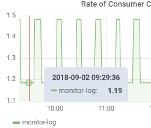
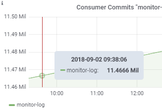
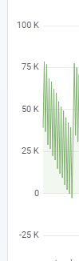
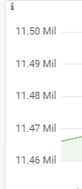
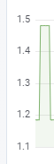

Why auto decimals?
现在即席查询里的单位格式化用的是从grafana里copy出来的kbn，kbn里的format函数的参数除了value外通常还有decimals和scaledDecimals。
decimals指的是传统意义上的保留小数位，如1.23对应的就是2。
scaledDecimals指的则是单位转换过后的保留小数位，比如kbn转换时间时会默认将超过1000的时间进位，1234ms -> 1.23s，这里1.23就是scaledDecimals = -1时的结果（单位转换时会增加decimals，这里从ms -> s就增加了3位decimals）。
decimals和scaledDecimals的使用规则是，如果没有scaledDecimals统一使用decimals，有的话在发生单位转换时使用scaledDecimals，其他情况使用decimals。
下面要讲的auto decimals就是用来计算这两个值的。
grafana的auto decimals算法
这里主要讲的是graph panel下的auto decimals，graph下tick的decimals和tooltip稍有不同，后者的decimals多一位，scaledDecimals多两位

主要实现代码在 grafana\public\app\core\utils\ticks.ts 文件的 getFlotTickDecimals(datamin, datamax, axis, height) 函数。
export function getFlotTickDecimals(datamin, datamax, axis, height) {
const { min, max } = getFlotRange(axis.min, axis.max, datamin, datamax);
const noTicks = 0.3 * Math.sqrt(height);
const delta = (max - min) / noTicks;
const dec = -Math.floor(Math.log(delta) / Math.LN10);
const magn = Math.pow(10, -dec);
// norm is between 1.0 and 10.0
const norm = delta / magn;
let size;
if (norm < 1.5) {
size = 1;
} else if (norm < 3) {
size = 2;
// special case for 2.5, requires an extra decimal
if (norm > 2.25) {
size = 2.5;
}
} else if (norm < 7.5) {
size = 5;
} else {
size = 10;
}
size *= magn;
const tickDecimals = Math.max(0, -Math.floor(Math.log(delta) / Math.LN10) + 1);
// grafana addition
const scaledDecimals = tickDecimals - Math.floor(Math.log(size) / Math.LN10);
return { tickDecimals, scaledDecimals };
}
从这个函数的第二行可以发现grafana是通过图表的height来动态计算y轴的tick count，然后得到 delta = tick interval 来进行接下来的运算。
计算decimals比较简单，在代码的27行，基本上就是求以10为底的delta的对数，并且对于超过10的数字decimals都为0，所以在grafana里要显示比较大数字的小数，如10.012，就必须要手动设置decimals。
计算scaledDecimals的方法比较奇怪，首先算出了delta的位数的最小值 magn （例：9999 -> 1000，424 -> 100），然后算出了在1~10内的标准值 norm （例：9999 -> 9.999，424 -> 4.24）。接下来是一堆 if else 组成的分段函数根据 norm 求得 size * magn，最后用decimals减以10为底的size对数得到scaledDecimals。这个计算方法奇怪之处是根据 norm 求 size 的部分，因为这块size小于10是完全不会影响结果的，不知道为什么要分开这么多段。（可能是代码写错或者我没考虑到一些特殊情况）
这种算法在一般情况下还是很适合的，比如下面3张图，第一张的interval = 25k，算得的scaledDecimals刚好抵消了单位转换带来的额外小数；第二张的interval = 10000，算得的scaledDecimals刚好是-4，而单位转换的额外decimals是6（0 -> k -> Mil，每次进位多3位小数），所以保留了2位小数；第三张没有转换所以用的是由interval = 0.1得到的decimals = 1。

接入即席查询
肯定不能简单地将grafana里的代码copy过来直接用，因为G2计算ticks interval的算法和grafana里不一样，在尽量少修改的基础上想了2个方案
因为G2可以自定tick count和interval，或许可以考虑直接用grafana的利用高度计算ticks count的算法？
我觉得grafana计算tick count的算法还是挺不错的，不过使用场景有限：只能用于直角坐标系、只能用于连续型数据、每次高度变化都要去更新scale的format函数（会导致G2重新处理数据，性能上可能会有问题）。
拿到G2计算好的ticks然后传给计算auto decimals的函数。
这里麻烦的是拿到G2计算的ticks，虽然可以通过处理好数据的G2对象拿到ticks，但是这样意味着每次都要渲染两次，不太合理。所以还是要主动调用相关的api来 计算，因为G2没有暴露相关的api，所以会用一些比较hack的方式去调用。
需要的计算ticks的函数在 @antv\scale\src\auto\number.js 里，这个函数看起来参数比较多，其实只要传入min、max就可以计算了，但是为了兼容之后可能会添加的列定义表单，还是找更为上层的封装更合适。于是利用位于 g2\src\chart\controller\scale.js 的 ScaleController ，这个类只需要传入转换后的Scale，并调用其 createScale 方法来得到所需结果。